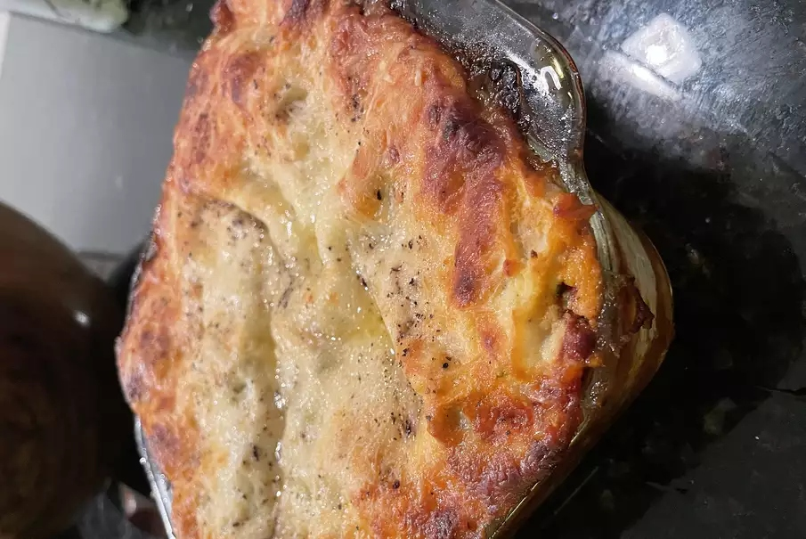

Lasagna

Description
Lasagna is a type of pasta or a dish made using the boiled pasta.
It is an Italian dish and is eaten alot and is loved by cheese-lovers.
Ingredients
- 1 pound sweet Italian sausage
- 3/4 pound lean Ground Beef
- 1/2 cup minced onion
- 2 cloves garlic, crushed
- 1 (28 ounce) can crushed tomatoesf
- 2 (6 ounce) cans tomato paste
- 2 (6.5 ounce) cans canned tomato sauce
- 1/2 cup water
- 2 tablespoons white sugar
- 3/2 teaspoons dried basil leaves
- ½ teaspoon fennel seeds
- 1 teaspoon Italian seasoning
- 3/2 teaspoons salt, divided, or to taste
- 1/4 teaspoon ground black pepper
- 4 tablespoons chopped fresh parsley
- 12 lasagna noodles
- 16 ounces ricotta cheese
- 1 egg
- 3/4 pound mozzarella cheese, sliced
- 3/4 cup grated Parmesan cheese
Instructions
- In a pot, cook the ingredients to form a good red sauce
- In a big pot, boil water and cook the lasagna pasta sheets
- Preheat the oven to 375 F
- Assemble the lasagna with 4 layers of pasta sheets
- Cook for 45 with an aluminum foil